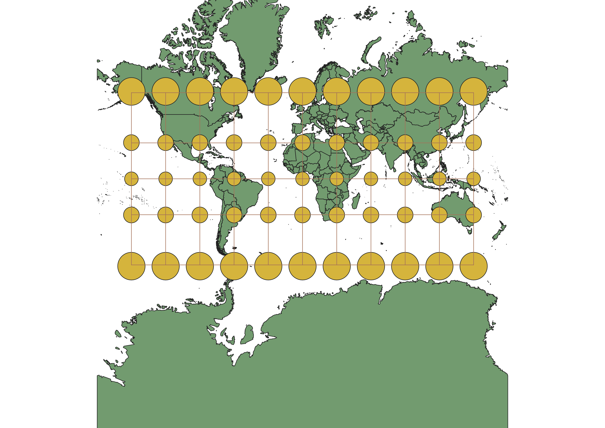
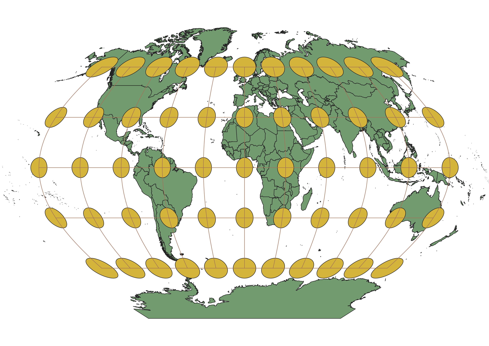
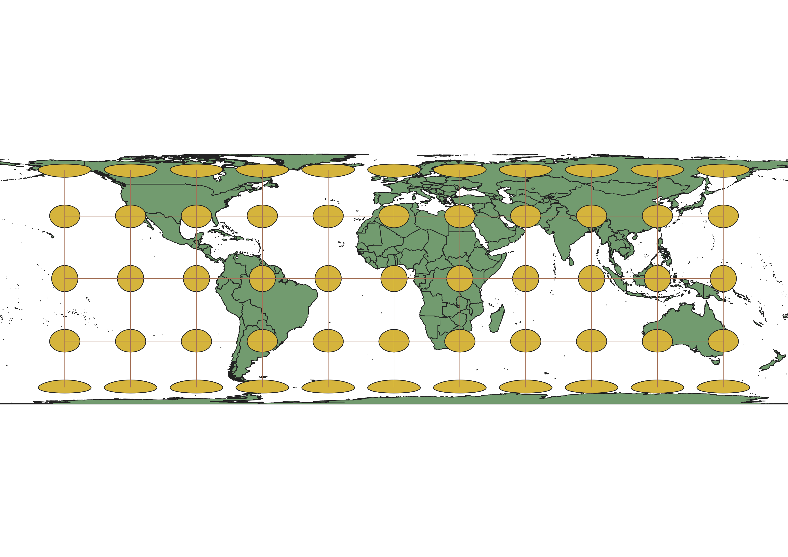
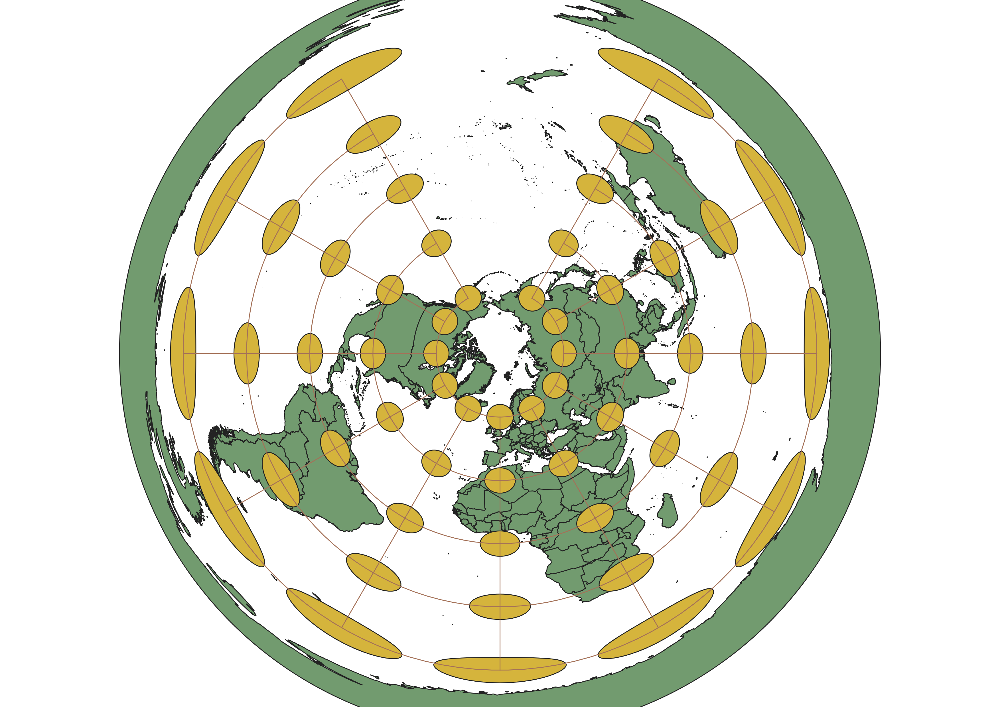
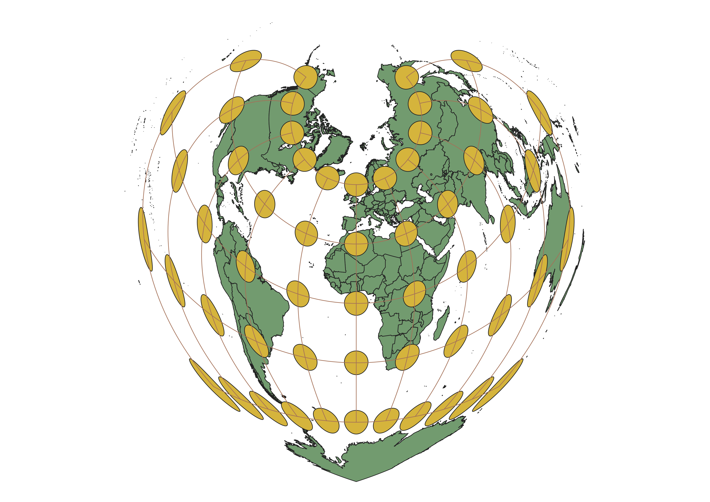
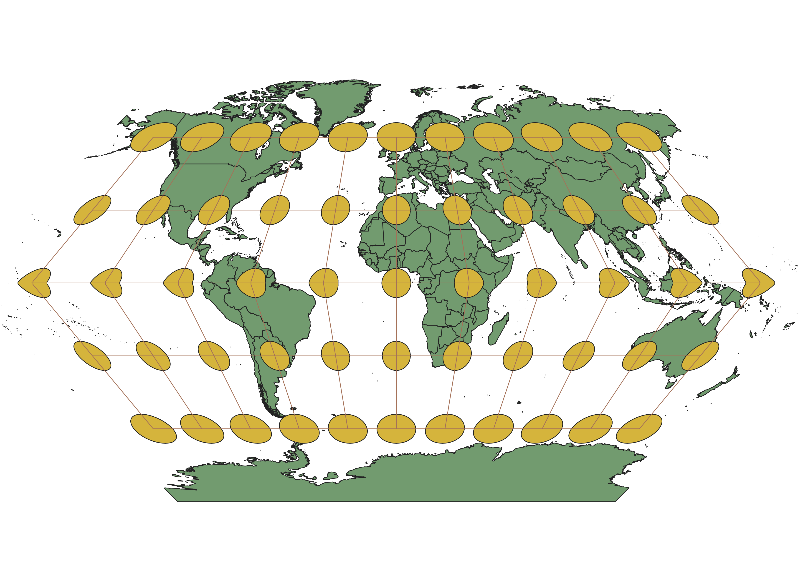

In this project I learned how to display images in different projections
Explaination
Maps were displayed using QGIS. The projection data was the medium culture packet by www.naturalearthdata.com. The different maps were displayed by adjusting the Coordinate Reference System (CRS) in QGIS and then applying the Indicatrix mapper to the various projections to show the distortion of each map.
WGS84 Projection
Uses standard reference ellipsoid model. Attempts to moderate distortion. Most distortion is at the poles. The standard model for most Western Governments.

Aitoff Projection
Modified Azimuthal Projection. Uses a 2:1 Elipse to compensate for any distortion.

Pseudo Mercator
Accurate Shape but experiences size distortion. Straight lines can be drawn on the map that have true navigational azimuths. Originally designed for magnetic sea navigation.

Sphere Winkle
Modified Azimuthal Projection. Minimizes distortion of Distance, Area, and Direction. Based off the Aitoff Projection

World Cylindrical
Meridians are mapped to be equally spaced. Creates North-South Stretching. Does not Accurately portray area. There are two tyoes - Mercator and Central Cylindrical

North Pole Equadistant
Flat view of the Earth from the North Pole. Azimuthal Equadistant Projection. Distance from the center determines the degree of distortion. The farther away from the center the greater the distortion.

Sphere Bonne Werner
A pseudoconical equal area projection. Maintains accurate shapes along the central central meridian and the further distance fom the mericidian the greater the distortiion.

World Eckert
This projection uses six pseudocylindrical projections. Attempts to balance area and distance distortion by by breaking them up into equal and alternating types of distotion.

Data used for this project
Download Natrual Earth 1:10m Cultural Vector